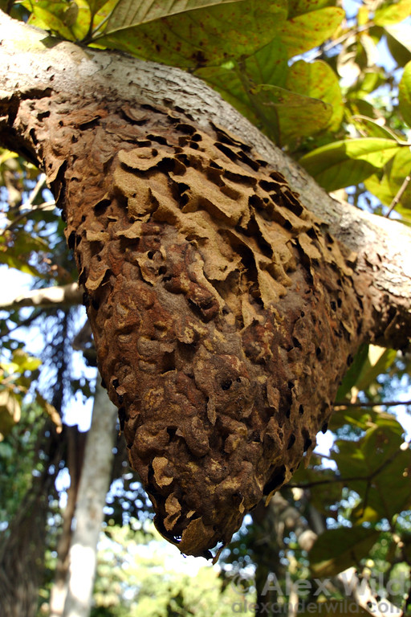
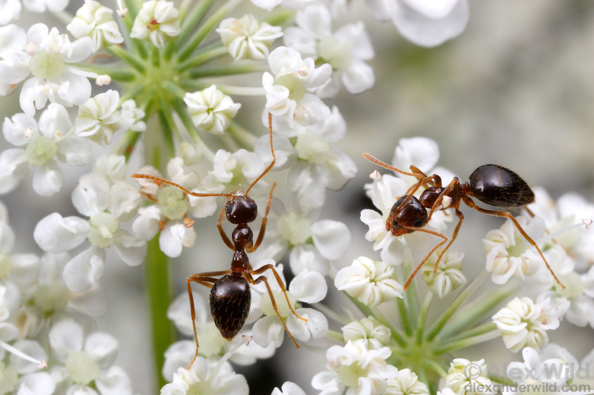

Western black carpenter ant
Camponotus modoc
Wood provides housing.
Honeydew provides fuel.
Alex Wild · CC0 · Lake Tahoe
Ants of the Mount Shasta region & beyond
The hidden lives of ants
Greg Chism · Audubon Society
Part 02 of 5
Who lives here? How
do they make a living?
Mount Shasta & Lake Siskiyou · Radomianin · CC BY-SA 4.0
Forest floor.
Sunny openings.
Dry country to the north.

Camponotus modoc
Wood provides housing.
Honeydew provides fuel.
Alex Wild · CC0 · Lake Tahoe
Formica sibylla
Nests underground.
Moves soil and fallen needles.
Formica sibylla · California species portrait
Jonghyun Park / iNaturalist · CC BY · displayed crop
Both species have Siskiyou records. Photographs are species portraits; the behavior comes from western studies.
Mount Shasta region · a species recorded near Castella
Camponotus modoc
CDFA species account · Petry et al. 2013 · Wood is housing, not food. Honeydew comes from sap-feeding insects.
Part 03 of 5
A society of ants that lives,
reproduces and works together.
Queen & workers · Camponotus mutilarius · wider-world example · Wikimedia Commons · public domain
How do thousands of ants
work together?
Watch how encounters
change what a worker does.


The queen lays eggs.
The workers coordinate
the work.

Egg → larva → pupa → adult
Workers tend the
growing generation.

Scouts find a site.
Then they carry nestmates.
One worker walks.
The passenger curls up.

After enough scouts gather at a candidate nest, they switch to carrying the colony’s less active members.
A colony needs a new home.
Near / exposed: 0 · Far / sheltered: 0 · Searching
Toy model inspired by Temnothorax nest choice. Counts and thresholds are invented for teaching; not a local-species claim.
A cone of excavated grains.
Different colors reveal layers.
Shelter can be built
within existing wood.
Carton hangs
from a tree branch.

These were empty spaces
beneath the soil.
Narrow shafts.
Broad chambers.
Different species, different plans.

Casts make the hollow architecture visible. Moving soil and concentrating food and waste can change local soil conditions; effects vary.
The seed travels.
The ants eat the oily reward.
An observed example from eastern North America. Western trillium is a regional ant-dispersed plant; its local ant partners are not established here.
An oily attachment
can pay for a ride.

Western trillium is one regional plant example.
Diagram shows a general ant–seed interaction.
1 / 3 · Seed with an oily attachment

Some ants pollinate. This photograph shows nectar gathering; it does not establish successful pollination. Ant seed dispersal and pollination are distinct services.
US Forest Service · Western trillium account, p. 113
Northern Flickers often forage
for ants on the ground.

Watch the bill
work across the ground.

Watch the cargo.
Where is it going?
Leafcutters are a wider-world example.
This clip shows transport, not the underground garden.
Leaves are the growing medium.
The fungus is the crop.

Small workers.
Big-headed majors.
One fire-ant colony.

Choose a job, then a head. Or flip a card to explore.
0 of 3 matched · No job selected.
Living ants · photos and a film on reverse · photographs © Alex Wild · wider-world examples
Some workers store liquid food
inside their expanded bodies.

In Camponotus modoc,
alarm chemistry can
bring nestmates closer.
Formic acid is part of the chemical toolkit of carpenter ants and Formica. This portrait does not show spraying.
Renyard et al. 2020
A tiny body movement.
A signal through the surface.
Watch the abdomen.
Listen to the vibration.
Laser-vibrometer recording of a worker feeding on honey water.
Colony against colony. Real jaws. Real losses.


Separate battles. Field accounts also describe lines of dead carpenter ants left along a battlefront.
Watch the gripping jaws
and pulling bodies.

Watch the dark queen
approach the brown queen.
Look for the quick curl
of her abdomen.

Captive-colony observations behind Shimada, Tanaka & Takasuka (2025). The spray’s chemical identity remains to be tested.
The colony’s own queen
becomes a target.
Watch the small workers
around the brown queen.

Captive-colony observations behind Shimada, Tanaka & Takasuka (2025). The spray’s chemical identity remains to be tested.
An intruder sprays her.
Her workers attack.
Watch where the intruder
aims her abdomen.

Filmed in captive colonies. Formic acid is the proposed agent; its identity and exact effects remain to be tested.
Southeast Asia · Colobopsis explodens
A rupturing worker releases
a sticky yellow secretion.
The yellow material
sticks the ants together.

All four ants died after this encounter. The secretion is expelled by rupture of the workers’ enlarged gland reservoirs.
The worker ruptures.
The secretion entangles an opponent.

15 minutes
What would you like to know
about these neighbors?


.jpg){kind=link}


_at_Oakland_Zoo.jpg){kind=link}
.jpg){kind=link}